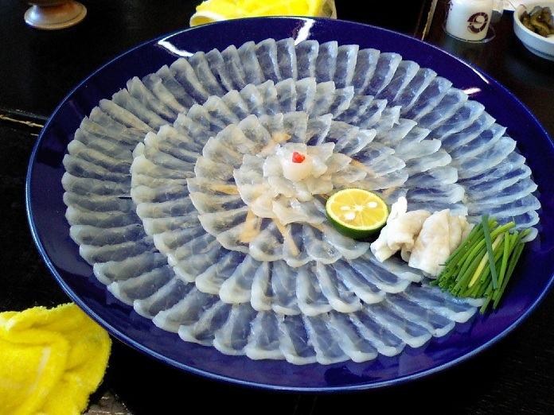
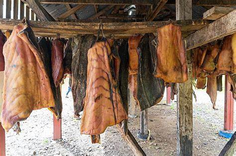
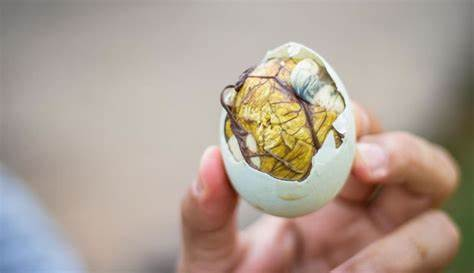

| Fugu (Baiacu) - Japão |
R$ 500 a R$ 1.000 por refeicao |
O fugu é um peixe altamente venenoso se não for preparado corretamente. Apenas chefs licenciados podem prepará-lo. Geralmente é servido em fatias finas como sashimi. |
 |
| Hákarl (Tubarão Fermentado) - Islândia |
R$ 100 a R$ 200 por refeicao |
Hákarl é feito de carne de tubarão-groenlandês, que é curada e fermentada por vários meses. O processo envolve enterrá-lo na areia e depois pendurá-lo para secar. Tem um cheiro muito forte e um sabor adquirido. |
 |
| Balut (Embrião de Pato) - Filipinas |
R$ 5 a R$ 15 por unidade. |
Balut é um ovo de pato fertilizado com um embrião parcialmente desenvolvido. É cozido e geralmente consumido com uma pitada de sal. É considerado um petisco em muitas partes da Ásia. |
 |